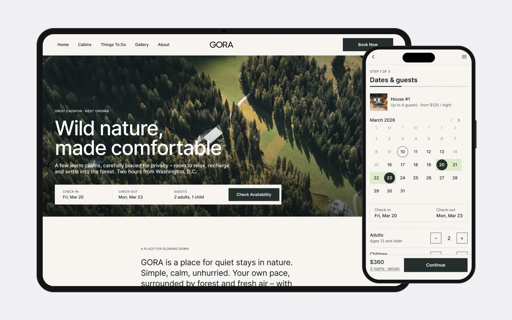
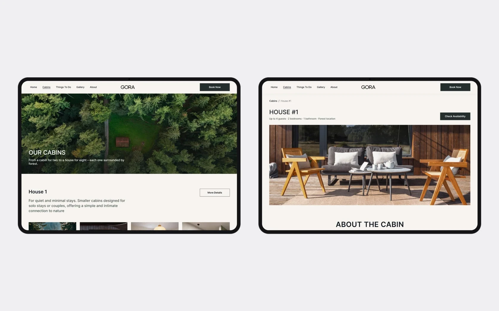
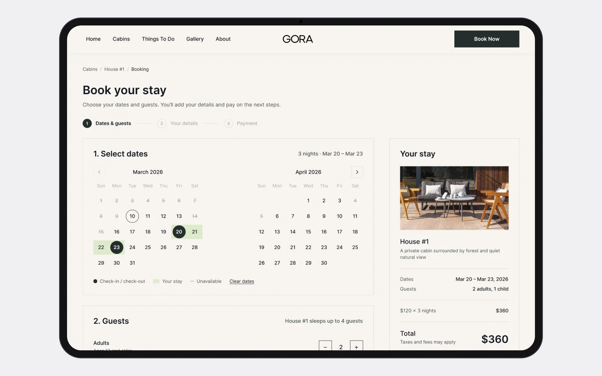
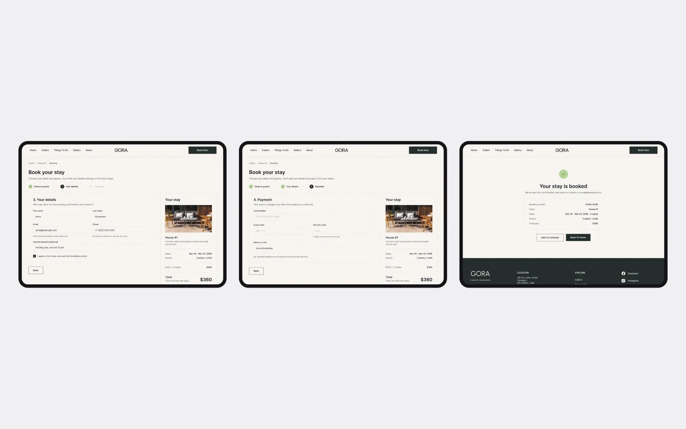
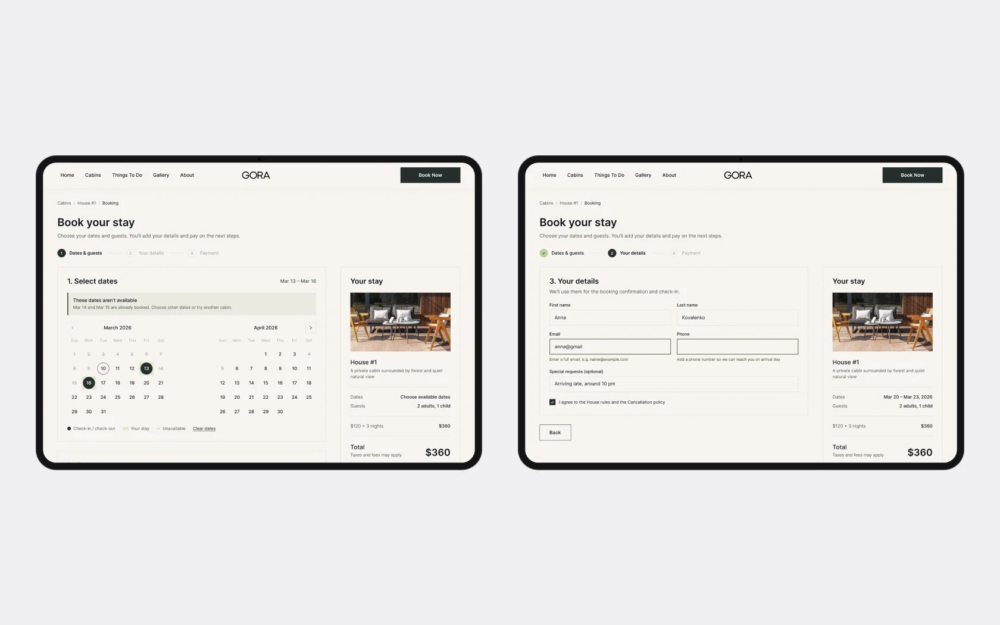
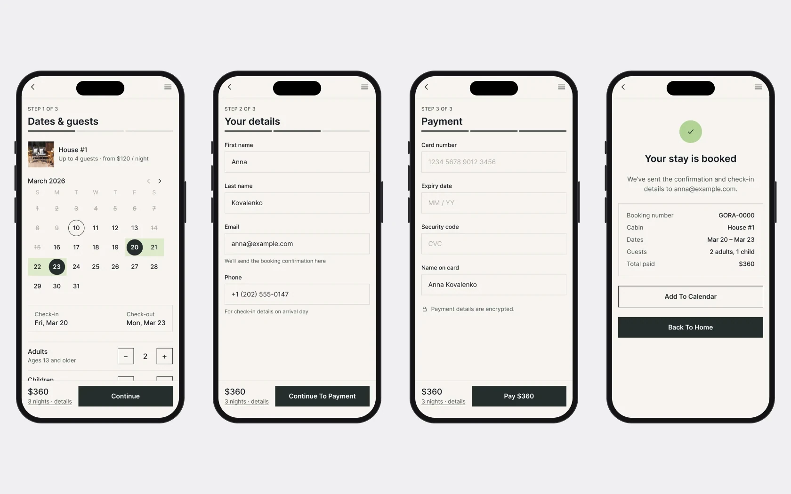

Клієнт хотів продавати не ночівлю, а стан: тишу, ліс і можливість вимкнутися.
Власники ремонтують будиночки, які лишилися від попереднього господаря, і ставлять нові. Сайт потрібен, щоб показати місце інвесторам і почати приймати перші броні. Будиночки різні: один розрахований на двох, в іншому буде hot tub чи баня, а нові ставитимуть однаковими. Назв, фото й текстів на старті не було.
Бриф і референси
Клієнт показав сайти, які йому подобаються: AutoCamp, Hinter, Our Habitas, Unyoked, Ziedlejas, Slowhop, Lumen, Treehotel. З них склався список того, що для нього важливо:
- спершу атмосфера, потім інформація;
- природа більша за інтерфейс, один сильний візуальний якір;
- бронювання на першому екрані, але не агресивно;
- кнопка бронювання завжди під рукою;
- широкий сайт на весь екран.
Палітра прийшла з добірки для ремонту – кольори стін і меблів. Клієнт одразу попередив, що не знає, як ці тони виглядатимуть на екрані.
Бронювання з першого екрана, але тихо
- Чому
- Бриф просив бронювання на першому екрані без агресивного продажу і кнопку бронювання завжди під рукою.
- Що зробила
- Перший екран – кадр лісу й тонка панель бронювання внизу: заїзд, виїзд, гості, «Check availability». На сторінці будиночка – кнопка «Check availability» поруч із назвою, а «Book Now» стоїть у хедері кожної сторінки.
- Результат
- Дати можна перевірити одразу, не шукаючи, де тут бронювання, а головним на екрані лишається ліс.

Структура під будиночки, яких ще немає
- Чому
- Будиночки різні за розміром і опціями, частину ще ремонтували, назв і фото не було.
- Що зробила
- Каталог, де кожен будиночок – однаковий блок: назва, короткий опис, чотири фото і «More Details». На сторінці будиночка – параметри (гості, ванна, спальні, локація), опис, зручності іконками й галерея. До появи назв – нумерація House #1…#7, як попросив клієнт.
- Результат
- Новий будиночок – це новий блок у каталозі й нова сторінка за тим самим шаблоном, без перебудови сайту.

Букінг: підсумок завжди перед очима
- Чому
- Бронювання – головна дія сайту. Людині треба бачити, що саме і за скільки вона бронює, ще до оплати.
- Що зробила
- Окрема сторінка з хлібними крихтами Cabins / House #1 / Booking і двома кроками: дати в календарі на два місяці та кількість дорослих і дітей. Справа – блок «Your stay»: фото, ціна за ніч, дати, гості, сума за всі ночі, «Continue Booking» і «No hidden fees».
- Результат
- Перша версія сайту бронює через сервіс Lodgify, тож цей флоу поки чекає на свою інтеграцію.

Передача в розробку
Перед збіркою у Webflow я підготувала структуру сторінок, стилі й компоненти, щоб збирати швидше, консистентно і без зайвих правок. Шрифт для заголовків клієнт обрав із кількох запропонованих варіантів, логотип передала у кривих.
Роботу розбили на етапи: дизайн, робочий сайт для інвесторів, контент, інтеграції. Сайт зібрали у Webflow з бронюванням через Lodgify, у липні 2026 він запрацював на gorastay.com.
Друга ітерація – концепт
На gorastay.com працює перша версія. Після запуску я повернулася до макетів і доробила те, що в ній лишилося сирим: решту флоу, стани й мобільну версію. Це концепт – у продакшені його поки немає. Екрани вище вже з цими правками.
Букінг: три кроки й підтвердження
Календар зібрала з компонентів замість картинки: заїзд, виїзд, діапазон, сьогодні, недоступні дні. Далі – дані гостя, оплата й підтвердження. Підсумок «Your stay» стоїть на сітці й супроводжує всі кроки.

Стани й модалки
Вибір дат і гостей прямо з форми «Stay a while», недоступні дати з поясненням і неактивною кнопкою, помилки полів із підказкою, що виправити, галерея будиночка.


Мобільний букінг
Клієнт очікує близько 90% бронювань з телефона, тому весь флоу отримав мобільну версію: прогрес «Step 1 of 3», сума й кнопка закріплені внизу. Під це зібрала UI kit – кнопки, день календаря на 8 станів, лічильник, поле вводу, крок, рядок підсумку, футер – і додала текстові стилі для 14 і 12 px.

- 01
Контенту на старті не було, тому дизайн тримається на структурі, яку можна наповнити пізніше: фото, назви й описи будиночків клієнт додає вже після запуску.
- 02
Запущена версія відрізняється від макета: перша версія робоча і спрощена, бронювання – через сторонній сервіс.
- 03
У другій ітерації з’явилися мобільний букінг, стани й UI kit. Далі – перевірити з гостями, чи зрозуміла панель бронювання в хіро без окремої форми.